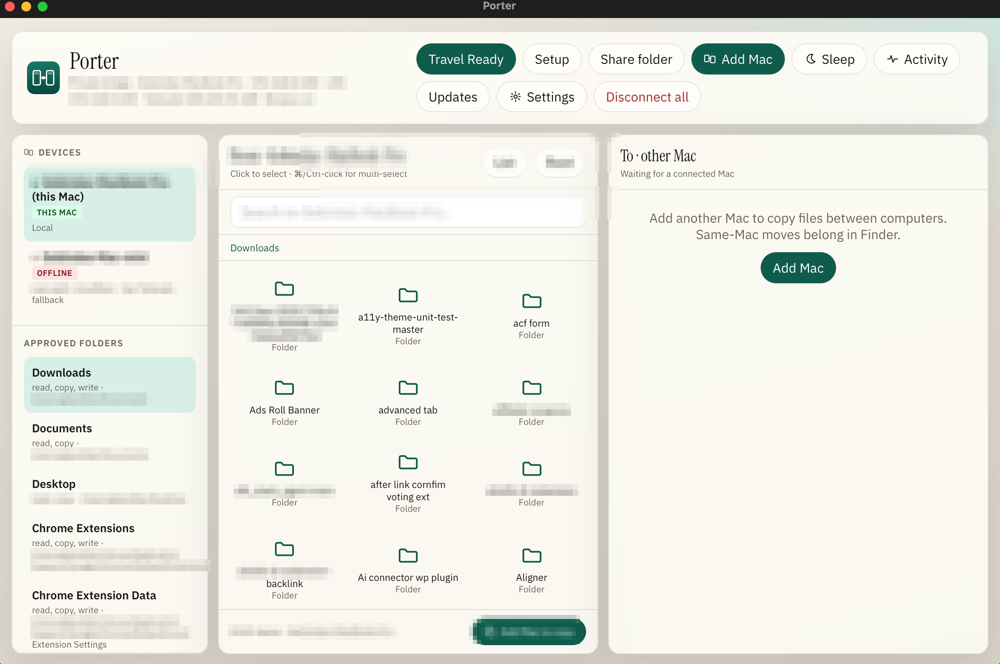
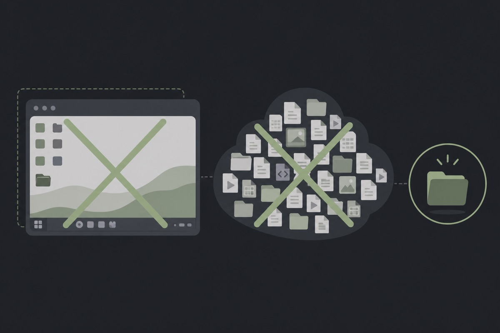

Remote desktop
- Full screen, mouse, and keyboard
- Broad session risk
- Awkward for AI agents
- Often a vendor cloud in the middle
For people with more than one Mac
Copy folders between your Macs like Finder
Install Porter on each Mac, share only the folders you approve, then copy files over your home Wi‑Fi, across the internet, or while you travel abroad (via Tailscale). When you want AI help, connect Cursor, Claude, or Copilot through MCP so they can use those same folders. No Porter cloud. Not remote desktop.
Latest release MIT · Apple Silicon · First open may need right-click → Open

The gap
Cloud drives sync everything or nothing. Remote desktop gives full control when you only needed a project folder. Porter keeps access narrow and visible.
Product
Setup, AI tools, travel, activity, and Finder panes. Sensitive details redacted for public screenshots.
Hands-on
Scroll the stack for a full path from install to copy, travel, AI tools, and the activity log. Scroll back up to revisit a step. Click any screenshot to enlarge. Nothing here is automatic sync or remote desktop.
Download the Apple Silicon DMG from Releases. Open it and drag Porter into Applications (do not run it from Downloads). First open may need right-click → Open if Gatekeeper asks. That warning is normal for non-notarized indie builds.
On the Mac that keeps the real folders, treat it as home. On the other Mac, join with the same pair token. You will do this once per machine during setup.
Add project folders with the system picker. Writes stay confirm-gated by default. Porter is not a whole-disk share and it does not claim to sync every change both ways.
Copy the pair token from the home Mac and enter the exact same token on the travel Mac. Treat it like a password. Then add the other Mac by LAN address on the same Wi‑Fi, or by Tailscale when you are away.
Open the dual panes. Pick From and To Macs, open an approved folder, multi-select if you need, then Copy. Expect a confirm step before writes. Progress shows in the UI; this is explicit copy, not silent background sync.
Settings → Connected Macs lets you add another machine or remove one you retired. Keep the pair token in sync whenever you reinstall or reset a Mac.
Before you leave, run Travel Ready / Set and forget on the home Mac so keep-alive and Tailscale paths stay available. Tailscale must be installed and signed in on both sides for reliable abroad access. Cloudflare Quick Tunnel is optional backup only.
In setup or Settings → AI tools, connect Cursor, Claude Desktop, Claude Code, or VS Code / Copilot. Porter merges MCP config for that app. Agents then use the same allowlists and pair rules as the Finder UI.
Activity shows transfers, device events, shares, travel, MCP, and system rows with OK or failed status. You can filter, retain fewer days, export, or save a copy. Use it when you want proof of what moved.
1 / 9
Scroll down or up to move through the stack
Capabilities
Tap a card for more detail.
MCP
Porter exposes tools to list devices, search, read, and copy within shares. The IDE never mounts your whole home disk.
| Client | Status | Notes |
|---|---|---|
| Cursor | Recommended | ~/.cursor/mcp.json |
| Claude Desktop | Supported | Quit and reopen after Connect |
| Claude Code | Supported | ~/.claude.json |
| VS Code / Copilot | Supported | User mcp.json · use Agent mode |
Trust
Narrow and visible. Not zero risk. Details on dedicated pages.
Ideal fit
If you keep real work on one Mac and live on another, Porter is aimed at you. If you want a whole-desktop remote session or a cloud that mirrors everything, it is not.
Your heavy machine stays home with the real projects. Your lighter Mac is what you open in hotels, cafés, and other countries. You need tonight’s folder, not a second life in the cloud.
Both machines are on the home Wi‑Fi. One holds design files, client work, or a repo the other needs right now. AirDrop is fine for a photo. Porter is for the folder you will keep coming back to.
Cursor, Claude, or Copilot should read and pull from folders you already trust, with the same rules as the Finder panes. You are past pasting half a project into chat just so the model can see it.

Skip Porter if you need full remote mouse and screen control, an iPhone app, or Dropbox-style two-way sync with conflict UI. Those are different jobs. Porter stays a private folder bridge on purpose.
Get Porter
Apple Silicon (M1-M4)
Loading latest release…
Gatekeeper friction is normal for indie MIT apps that are not Apple-notarized. It does not mean Porter is malware. Prefer downloads from official GitHub Releases.
Maker

WordPress product marketer · stubborn problem-solver · lifelong Harry Potter devotee
By day I am the Product Marketing Specialist at WPBakery. Before that, I helped a single plugin cross 400,000+ active users.
When the day-job owl flies home, I tinker on my own workshop of spells.
Case study
I kept hitting the same quiet failure: the Mac in my bag was ready to work, and the files that mattered were still on the Mac at home. Shipping a zip through chat felt small and clumsy. Turning on full remote desktop felt like lending someone the whole house for a single drawer. Cloud sync wanted more of my disk than the problem deserved.
A bridge that behaved like Finder: pick the folders, pair the machines, copy what I meant to copy. At home that meant the LAN. On the road it meant a private path without opening the house to the public internet. And when I asked an AI IDE for help, it had to use those same folders, not a second back door.
Porter is that bridge. I built it in the workshop for my own travel and desk loop first. The activity log, allowlists, and MCP connectors exist because I needed to see what moved and keep the power narrow.
I am not selling a Porter cloud. The hard part was the private path between my own Macs, and that gap is common enough that locking it behind a subscription felt wrong. MIT means you can use it, fork it, and keep the workshop going with a star or a tip if it saves you a night of zip-and-hope.
History
Newest release opens fully. Older notes stay one click away. Synced from GitHub Releases.
Fetching release notes.
FAQ
No. Porter is an MIT-licensed app from GitHub Releases. Without Apple notarization, Gatekeeper shows a warning. Install to Applications, then right-click → Open, or use Privacy and Security → Open Anyway.
No. TeamViewer-style tools remote a whole computer. Porter bridges approved folders between your Macs and exposes those same folders to AI IDEs through MCP.
Tailscale gives a private mesh with stable addresses for travel. Your Tailscale account gates reachability. Porter’s pair token gates what the app allows. Cloudflare Quick Tunnel is optional and can change after reboot.
No. Same LAN works with the pair token and LAN address. Tailscale is required for reliable travel and unattended home access.
Current builds target Apple Silicon. Intel may exist in older releases. There is no iPhone or iPad app in this version.
Not in V1. Porter focuses on explicit copy and one-way sync without conflict UI.
Porter is MIT licensed. Free to use, modify, and share. See LICENSE.
Porter is MIT-licensed and ships without ads or a Porter cloud. A GitHub star helps others find it. A small donation keeps the workshop lit.